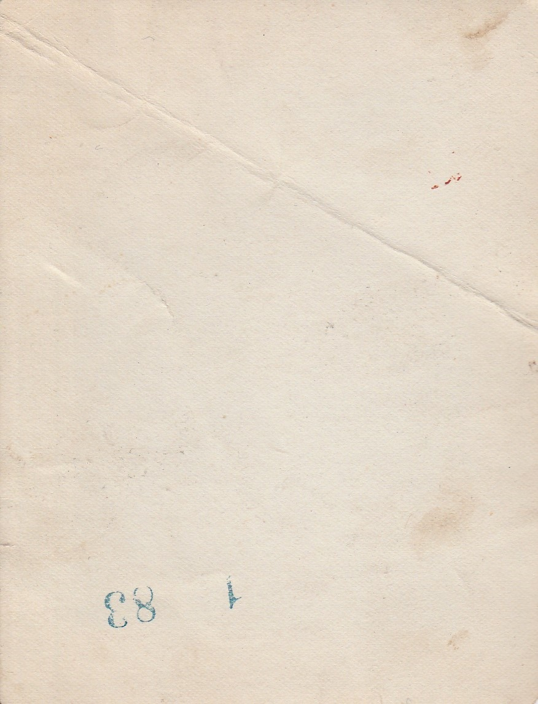

Specifics
-
Physical Medium: Bordered Photopaper
-
Type: Photograph
-
Digital Medium: JPEG
-
Color Profile: Black and White
-
Description: A blurry car passing into frame on a road. Photographer was standing on the side of the road catching both the road on the left and the trees and telephone pole on the right.
-
Date:
-
Dimensions: 3.75" X 3"
-
Location of Origin: U.S. East Coast Area
-
Location Found: Found in an antique shop in the Oregon Dunes area in 2017. The majority of the photographs in this particular store were sourced from the East Coast of the U.S.
-
Internet Archive Link: Here